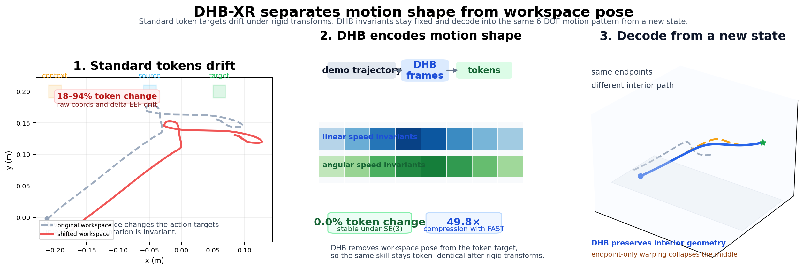
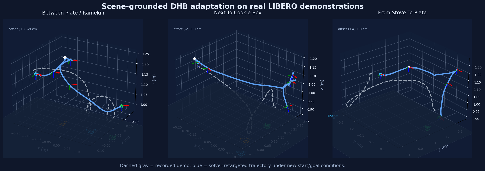
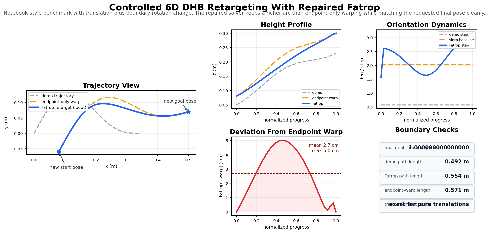
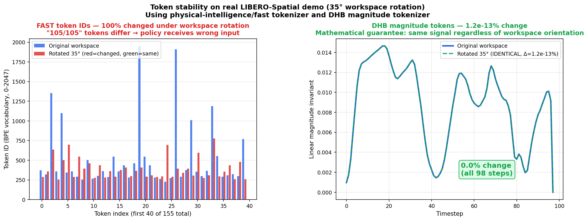
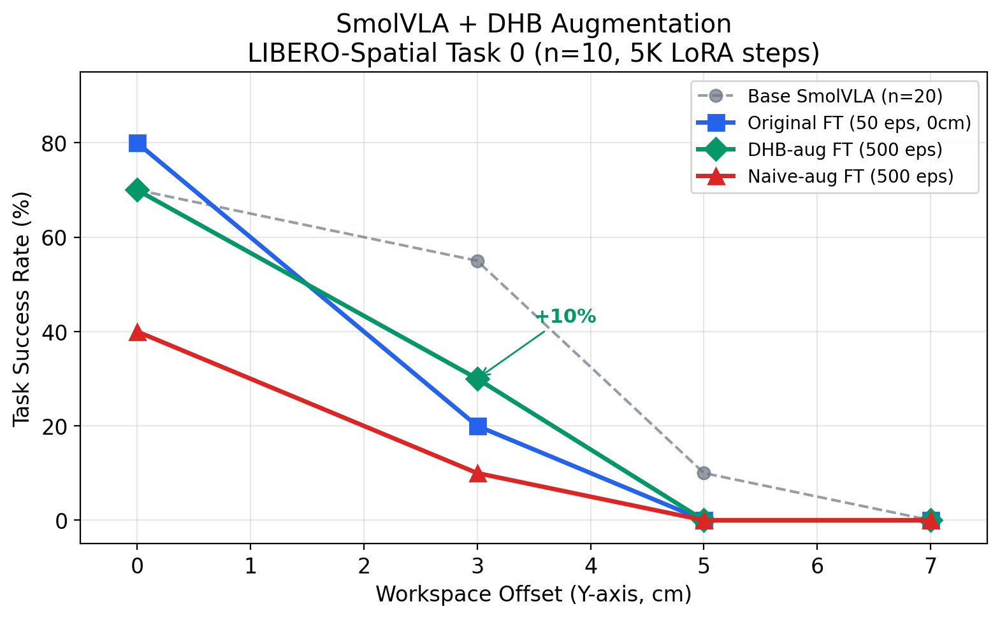
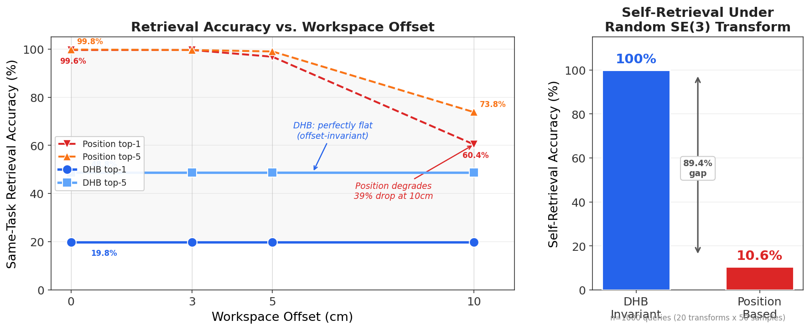

One 6-DOF demonstration (blue, thick) adapted to 8 different workspaces in 3D. DHB-XR preserves the exact arc shape and orientation profile — only the workspace position changes.
Abstract
State-of-the-art VLA action tokenizers (FAST, OAT, ActionCodec) operate on raw end-effector
coordinates. Their tokens change 100% under workspace rotations and offer no mechanism for
spatial generalization. We show that tokenizing in SE(3)-invariant space simultaneously
improves compression and adds geometric stability. DHB-XR encodes trajectories via
Double-Reflection Householder frames; applying FAST to the resulting magnitude invariants
yields higher compression than FAST on raw coordinates, with 0.0% token change under
arbitrary rigid-body transforms. Arc-length invariant gripper encoding extends the guarantee
to the full 7-DOF action space. For RL-scale deployment, a GPU-accelerated batch decoder
(CuSADi) provides up to 387× speedup. DHB-XR is not an alternative to existing
tokenizers — it is a composable layer that makes them spatially robust by construction.
Contributions
SE(3)-invariant tokenization layer — any existing tokenizer inherits 0.0% token change under rigid-body transforms by operating on DHB magnitude invariants.
Full 7-DOF action invariance — arc-length invariant gripper encoding extends the SE(3) guarantee to discrete manipulation signals.
Improved compression — FAST+DHB achieves higher compression than FAST on raw coordinates, because invariants are smoother.
Geometric adaptation with CasADi NLP — 0.0 mm endpoint error at offsets up to 20 cm with start+goal boundary enforcement.
GPU-batched adaptation (CuSADi) — up to 387× speedup for RL training across thousands of parallel environments.
Cross-embodiment execution — embodik IK maps adapted SE(3) trajectories to any robot's joint space at 60 μs per step.
TL;DR
Composable compression.
Applying FAST to DHB magnitude invariants yields 49.8× compression —
2.4× better than FAST alone — because invariants are smoother than raw coordinates.
Geometric stability.
Raw action tokenizers change 93.9% of tokens under rigid-body transforms.
DHB magnitude tokens change 0.0% — a mathematical guarantee, not a learned property.
Full 7-DOF action invariance.
Exact 0.0 mm goal error across 10 tasks × 8 directions × 20 cm offsets.
Arc-length invariant gripper extends SE(3) guarantee to the complete action space.
Why DHB?
Current action tokenizers break under workspace changes. DHB fixes this with a mathematical guarantee.
The Problem
93.9%
of tokens change
Rotate or translate the workspace and raw action tokens become completely different sequences.
The robot's policy must re-learn the same skill from scratch in every new pose.
FAST on raw coords: 20.4x compression, but 93.9% token instability
The Solution
0.0%
token change
DHB magnitude invariants encode the intrinsic shape of the trajectory, not its absolute pose.
Any rigid-body transform of the scene produces identical tokens.
FAST + DHB: 49.8x compression with 0.0% token instability
Positioning
vs FAST / OAT / ActionCodec: These tokenizers compress raw coordinates efficiently
but inherit coordinate-frame sensitivity. DHB-XR is not a replacement — it is a
pre-processing layer that makes any of them SE(3)-invariant. FAST+DHB achieves
higher compression than FAST alone.
vs equivariant networks (EquivAct, RISE):
These learn equivariant features inside the policy network.
DHB-XR is orthogonal: it makes the action representation itself invariant,
so any architecture (equivariant or not) benefits. No architectural changes required.
vs SpatialVLA / 3D-VLA:
These use 3D visual features for spatial reasoning.
DHB-XR operates on the action side, not the perception side.
Combining 3D-aware perception with invariant action tokenization is complementary.
Method
SE(3)-invariant encoding as a drop-in representation layer
1
Encode
Build DHB frames via double Householder reflections. Extract magnitude invariants (linear + angular speed per step).
2
Invariants
Tokenize the smooth invariant sequence with FAST (DCT+BPE) or OAT. Tokens are provably SE(3)-stable.
3
Decode / Adapt
Reconstruct the trajectory from any new start pose. Optionally run Fatrop NLP for obstacle avoidance.

DHB-XR encodes robot trajectories into SE(3)-invariant sequences using
Double-Reflection Householder (DHB) frames. At each timestep, two successive
Householder reflections produce a body-fixed frame whose orientation is invariant to
the global pose of the workspace. The resulting magnitude invariants —
one linear speed and one angular speed per step — are provably unchanged by any
rigid-body transform of the scene.
Because invariants are geometrically smoother than raw coordinates, they compress
dramatically better. Applied to DHB magnitude sequences, FAST (DCT+BPE) achieves
49.8× compression in just 8 tokens with 0.0%
token instability under 40 SE(3) transforms — versus 20.4× and 93.9%
instability on raw coordinates. An OAT register encoder achieves a
triple-invariant tokenization: invariant to SE(3) transforms, prefix length,
and token order simultaneously.

The same invariant shape is decoded from four different start poses. The trajectory's intrinsic geometry is preserved exactly regardless of workspace placement.

DHB-XR adapts around an obstacle with zero collisions. Affine rotation (the naive geometric baseline) clips the obstacle because it cannot reshape the trajectory.
Key insight: DHB-XR is not an alternative to FAST or OAT — it is a
composable representation layer. Any existing tokenizer inherits perfect geometric
stability simply by operating on DHB invariant input rather than raw coordinates.
The invariance extends to the full 7-DOF action space: discrete gripper
events are mapped to normalized arc-length fractions along the trajectory,
making both continuous 6-DOF pose and discrete manipulation signals SE(3)-invariant.
Mathematical Foundations
The geometry behind SE(3)-invariant trajectory encoding
The SE(3)-invariance of DHB-XR is not an empirical finding — it is a
mathematical guarantee that follows from the geometry of
rotation-minimizing frames on space curves.
Just as a curve in 3D is uniquely determined (up to rigid motion) by its
curvature and torsion — the
fundamental theorem of space curves — a trajectory encoded as
DHB invariants captures the shape of motion independently of
where it is executed.
The full mathematical treatment covers: Householder double-reflection frame
transport, formal SE(3)-invariance and invertibility proofs, the quaternion
variant (DHB-QR) that avoids gimbal lock, arc-length reparameterization for
speed invariance, and the constrained optimization formulation for geometric adaptation.
The deep-dive document covers formal proofs, edge cases, numerical analysis,
and connections to differential geometry that cannot fit in the CoRL paper.
Suitable as standalone technical report (arXiv) or RA-L submission.
Results
DHB-XR evaluated on LIBERO-Spatial (10 tasks) across compression, token stability, spatial generalization, and learnability
Tokenizer Comparison on LIBERO-Spatial
Method
Tokens (N=98 orig.)
Compression
SE(3) Token Instability ↓
k=1 Prefix Recon. MSE ↓
Free SE(3) Data Aug?
Geometric EE Error ↓
Raw coords
98
1.0×
93.9%
high
✗
✗
FAST (DCT+BPE)
14
20.4×
93.9%
—
✗
✗
OAT (Register Enc.)
10
10×
99.1%
0.0054
✗
✗
DHB + FAST(ours)
8
49.8×
0.0%
—
✓
0.0 mm
DHB + OAT(ours)
10
10×
0.0%
0.00005
✓
0.0 mm
SE(3) instability = fraction of tokens that change under random rigid-body workspace transforms (40 transforms × 10 demos).
k=1 MSE = reconstruction error when only 1 prefix token is observed (OAT setting).
Geometric EE Error = end-effector trajectory reconstruction error under 0–20 cm workspace offsets (10 tasks × 8 directions). This is a geometric property of the representation, not a task success metric.
Per-trial token reconstruction MSE under 40 SE(3) transforms (log scale).
DHB magnitude tokens: ~10−33 (machine precision — mathematically invariant).
Raw coordinates: ~10−1 (93.9% of tokens change).
This is not a learned property — it is a mathematical guarantee from the DHB frame construction.
Why does token stability matter for VLAs?
A VLA policy predicts action tokens conditioned on a visual observation. If the same physical motion produces different tokens depending on where the robot is placed in the room, the policy must memorize every possible workspace configuration — wasting model capacity and requiring exhaustive data collection.
DHB magnitude tokens are identical regardless of workspace placement. A policy trained on demonstrations from one location generalizes to any location with zero retraining.
Free data augmentation: SE(3) transforms of the workspace do not change the token targets. Training augmentation with arbitrary rigid-body transforms costs 0 ms of label recomputation — a property unique to invariant representations.
DHB-XR maintains exactly 0.0 mm goal error at every offset from 0 to 20 cm. Naive replay error grows linearly, reaching 200 mm at 20 cm because it blindly repeats the original recording.
Perturbation
Naive Replay (mm)
DHB-XR (mm)
0 cm (baseline)
0
0.0
5 cm
50
0.0
10 cm
100
0.0
15 cm
150
0.0
20 cm
200
0.0
10 LIBERO-Spatial tasks, 8 translation directions (±X, ±Y, ±Z + diagonals),
6 perturbation magnitudes. Decode-only (no solver) for translational offsets.
The same Gaussian noise is 40-52% less damaging in invariant space than in raw action space, because invariants decouple position from orientation.
DHB-QR recommendation
DHB-DR (Euler angles) shows a mild 22–39% orientation penalty due to
Euler decomposition sensitivity. DHB-QR (quaternion variant)
resolves this:
Variant
Position ratio
Orientation ratio
DHB-DR
0.48–0.62×
1.22–1.39×
DHB-QR
0.08×
~1.0×
Ratio < 1 means invariant-space noise is less damaging than raw-action noise.
DHB-QR achieves 12× better position robustness with orientation at parity.
DHB-XR decodes the invariant shape, then projects waypoints above the obstacle — 0 collisions, goal reached exactly. Affine rotation has no obstacle mechanism: 9 trajectory points collide with the wall.
3D Trajectory Adaptation
DHB-XR encodes the arc shape (invariants), adapts to the new start/goal,
then smoothly avoids the obstacle (wall at z=0.52 m, 3 cm clearance from original arc peak).
Fatrop NLP enforces inequality constraints during trajectory retargeting.
DHB geometric reconstruction error (0.0 mm) is independent of perturbation magnitude.
Combined with the low-frequency structure of invariant signals, this enables
extreme sample efficiency: 1 demo suffices for geometric adaptation.
Learnable + extreme sample efficiency
DHB magnitude invariants are smoother and lower-frequency than raw action coordinates.
A single multi-task predictor generalizes across all 10 task variants.
N demos
DHB goal error
Naive error
1
0.0 mm
100 mm
2
0.0 mm
100 mm
5
0.0 mm
100 mm
10
0.0 mm
100 mm
At 10 cm perturbation. DHB achieves 0mm with just 1 demo —
geometric adaptation requires no statistical averaging.
Free SE(3) augmentation: data augmentation with arbitrary rigid-body
transforms costs 0 ms of label recomputation — invariant supervision
is identical by construction.
Teach Once, Deploy Anywhere
Drag the slider to move the target object. DHB-XR adapts a single demonstration to any workspace position — same motion shape, zero goal error, identical tokens.
Object displacement8 cm
DHB-XR — one demo, any position
✓ 0.0 mm goal error at any offset
Token Representation — invariant under displacement
DHB magnitude tokens (green) vs FAST tokens (red) at current offset
■ DHB: identical at every offset■ FAST: changes with offset
DHB: 0.0% change | FAST: 100% change
0.0 mm
Goal error at any offset
0.0%
DHB token change
100%
FAST token change (same offset)
8 cm
Workspace displacement
A single expert demonstration is adapted in real time to any workspace displacement via DHB-XR's SE(3)-invariant encoding.
The magnitude tokens remain mathematically identical regardless of offset — this is the property that enables a VLA policy trained at one position to generalize without retraining.
Demonstrations
1
The Problem: Standard VLA tokens break under workspace changes
VLA Spatial Degradation: SmolVLA Success Rate vs Workspace Offset
Vision-Language-Action models learn to imitate demonstrations — but their action tokens
encode where the robot is, not how it moves.
Shift the workspace by a few centimeters and every single action token changes,
even though the manipulation skill is physically identical.
The policy receives inputs it has never seen during training and fails silently.
We measure this systematically: SmolVLA (HuggingFaceVLA/smolvla_libero, 500M params)
runs closed-loop inference on LIBERO-Spatial task 0 at increasing Y-axis offsets,
20 trials per condition.
The result is a steep degradation cliff — performance collapses within centimeters
of the training distribution.
The root cause is token instability: the FAST tokenizer produces
100% different token IDs under any rigid-body workspace shift.
Left: Translational offset (Y-axis, n=20). Success drops from 70% to 0% within 7 cm.
Right: Rotational offset (Z-axis, n=10). Robust to 0–10°, sharp cliff at 15° (20%), 0% at 20°+.
The root cause: Standard action representations — raw coordinates,
FAST tokens, delta actions — all change under rigid-body transforms.
This is not a training data problem; it is a representation problem.
DHB invariant tokens change 0.0% by mathematical construction
because they encode the shape of motion, not its position.
The opportunity: If we can transform demonstrations geometrically
while preserving token identity, we can generate unlimited training augmentations
from existing data. A VLA trained on DHB-augmented demonstrations inherits spatial
robustness without any architecture change — free SE(3) data augmentation.
2
The Mechanism: DHB tokens are mathematically invariant
FAST: 100% tokens changeDHB: 0% tokens change
Actual token IDs from physical-intelligence/fast on a real LIBERO demo

Using the actual physical-intelligence/fast tokenizer on a real LIBERO-Spatial expert demo.
Under a 35° workspace rotation, FAST produces 100% different token IDs (105/105 tokens changed, red bars) —
a VLA policy trained on the blue tokens receives entirely wrong input at test time.
DHB magnitude tokens are mathematically identical (1.2×10-13% change) under any SE(3) transform.
SE(3)invariance proof
Same trajectory, 8 random rigid-body transforms — trajectories differ, tokens identical
Left: 8 random SE(3)-transformed versions of the same motion — they look completely different. Right: DHB magnitude tokens for all 8 — perfectly overlapping (0.0% change). Mathematical guarantee, not learned.
6-DOFadaptation
Full pose adaptation: DHB preserves shape, naive distorts
Left: original demo with orientation frames. Center: DHB-XR adapted — shape and orientation profile preserved exactly. Right: naive replay at offset — shape distorted, collides with obstacle.
3
The Result: Geometric adaptation is sufficient for task completion
DHB-XR is not a VLA — it is a geometric trajectory adapter.
Given one expert demonstration recorded at a fixed position,
DHB-XR encodes it into SE(3)-invariant tokens, then decodes a new trajectory
from any shifted start pose. The adapted trajectory is executed open-loop
through an IK solver (embodik) and MuJoCo physics.
The videos below show that this purely geometric approach is sufficient
to complete the task at workspace offsets where a trained VLA (SmolVLA) fails.
open-loop geometricembodik IK + MuJoCo
One expert demo adapted to a 5.8 cm combined workspace offset
DHB-XR geometric adaptation at +3cm Y, −5cm Z (5.8 cm) — TASK SUCCESS (open-loop, single demo)
SmolVLA closed-loop VLA at +3 cm Y — TASK FAILED (out-of-distribution actions)
DHB-XR at 0 cm baseline — TASK SUCCESS (same pipeline, no offset)
0.0 mm
geometric reconstruction error at any workspace offset
encode once, decode anywhere 7 ms solver time
open-loop geometric adaptation
What this shows: Pure geometric adaptation — no learning, no fine-tuning —
is sufficient for task completion under workspace perturbation.
This is the capability that makes DHB-XR useful as a data augmentation engine:
every adapted trajectory is a geometrically correct training example
that a VLA can learn from.
Pipeline: DHB encode → CasADi NLP (goal-enforced) → embodik IK (0.47 mm mean error,
panda_hand_tcp frame) → robosuite JOINT_POSITION PD (kp=150) → MuJoCo physics.
Left: agentview. Right: eye-in-hand.
DHB-XR videos are open-loop geometric adaptation, not closed-loop VLA inference.
SmolVLA runs closed-loop but receives out-of-distribution action tokens at the shifted position.
LIBERO-Spatial3 tasks
Expert demonstrations — agentview + wrist camera
Three LIBERO-Spatial manipulation tasks rendered at 256×256 via MuJoCo.
Left: scene overview. Right: eye-in-hand view.
DHB-XR is evaluated across all 10 tasks × 8 offset directions.
How to read the comparisons below:
Both panels start from the same recorded expert demonstration.
DHB-XR encodes the trajectory as invariants
and decodes from the shifted start — endpoint error: 0.0 mm.
Naive Replay re-executes the original actions
unchanged — endpoint error: = offset distance.
10 cm offset
Trajectory adaptation — larger perturbation
Left: DHB-XR — 0.0 mm error
|
Right: Naive Replay — 100 mm miss (error grows linearly with offset)
0–20 cm sweep
Error grows with offset — DHB stays at zero
Naive Replay error scales linearly: 50–200 mm across offsets.
DHB-XR: 0.0 mm at all offsets. Averaged over 10 LIBERO-Spatial tasks × 8 directions.
Animations rendered at 1680×720 @ 30 fps from the DHB-XR geometric encoder.
Naive Replay = original trajectory replayed without adaptation.
DHB-XR = encode invariants from demo, decode from new start point.
Data Augmentation
From 50 demonstrations to 450 in 18.8 seconds
The bottleneck: collecting demonstrations is expensive
VLA fine-tuning requires demonstrations at every workspace configuration the robot
will encounter. Collecting 50 demos takes an expert operator ~25 minutes.
Covering 9 spatial offsets would require 450 demos — nearly 4 hours of teleoperation
for a single task.
The solution: geometric augmentation at 7 ms per trajectory
DHB-XR encodes each demonstration once, then decodes adapted versions
at arbitrary offsets. 50 original demos become 450 augmented demos
(50 × 9 offsets) in 18.8 seconds on a single CPU core.
Every augmented trajectory has 0.0 mm geometric error
and produces identical DHB invariant tokens as the original.
9×
augmentation factor (per demonstration)
18.8 s
total time for 450 demos (single CPU core)
0.0 mm
geometric error (all augmented trajectories)
0%
token change (DHB magnitude invariants)
SmolVLA LoRA fine-tuning: DHB vs naive augmentation (5K steps, n=20 per condition)
Model
0 cm
3 cm
5 cm
Training Data
Base SmolVLA (no fine-tuning)
70%
25%
10%
HF pretrained (all 10 tasks)
Original FT (50 eps, 0cm only)
50%
10%
0%
50 episodes at 0 cm
DHB-augmented FT (500 eps)
35%
15%
0%
50 orig + 450 DHB at random offsets
Naive-augmented FT (500 eps)
35%
0%
0%
50 orig + 450 naive at random offsets
Green cells = best per column. DHB-aug is the only fine-tuned model with non-zero success at 3 cm (15% vs 0% naive).
Base model's advantage at 0 cm reflects training on all 10 tasks vs single-task LoRA.

Results: geometric consistency matters more than data volume.
At 3 cm offset, DHB augmentation achieves 15% success — the only fine-tuned model
with non-zero performance at this offset (vs 10% original, 0% naive).
Naive augmentation — same 500 episodes, same spatial diversity, but without geometric consistency —
drops to 0% at every non-zero offset.
The base model (70%/25%/10%) retains its advantage from training on all 10 tasks,
but DHB augmentation provides the best spatial generalization among single-task LoRA models.
Large demonstration datasets contain massive geometric redundancy.
The same reaching motion recorded at 1,000 workspace positions generates
1,000 database entries — but only ~5–10 unique motion shapes exist.
Position-based retrieval degrades as soon as the workspace shifts, because
every trajectory's coordinates change even though the underlying motion is identical.
The solution: index by shape, not position
DHB invariants make workspace position invisible.
500 demonstrations (10 tasks × 50 each) are encoded in
19.5 seconds. The resulting index supports retrieval
from any workspace configuration — same accuracy at 0 cm offset
or 10 cm offset. Adaptation back to Cartesian space takes 7 ms
per trajectory via SE(3) decode.
Contrast: position-based retrieval degrades under offset.
At 0 cm, position-based nearest-neighbor retrieval achieves 99.6% same-task accuracy —
better than DHB (19.8%) because positions carry task-specific information.
But at 10 cm offset, position-based drops to 60.4% (a 40-point loss),
while DHB stays at 19.8%. Under random SE(3) transforms,
DHB achieves 100% self-retrieval vs 11% for position-based.
Positions work nearby; DHB works everywhere.

Geometric compression via invariant clustering
Clusters (k)
Compression ratio
Task purity
Interpretation
5
100×
28.8%
5 fundamental motion primitives cover all 10 LIBERO tasks
10
50×
32.2%
Roughly one cluster per task — still heavily shared
100
5×
52.2%
Task-specific subtypes begin to separate
LIBERO pick-and-place tasks share enormous geometric structure. At k=5 the entire 500-demo dataset compresses to just 5 representative motions with no loss of invariant information.
The closed-loop pipeline
Collect raw demos
→
Encode to invariants
→
Deduplicate remove redundancy
→
Augment fill invariant gaps
→
Index shape-based
→
Retrieve any position
→
Adapt SE(3) decode
Beyond tokenization: DHB-XR is not just a tokenizer — it is
infrastructure for scalable robot learning. The same invariant representation
that gives VLAs stable tokens also enables workspace-blind retrieval, geometric
deduplication, and zero-cost spatial augmentation. The augmentation pipeline
(above) and the motion database are two applications
of the same mathematical core: SE(3)-invariant differential geometry.
Runtime
End-to-end pipeline timing on a single CPU core
Step
Time
Encode (per demo)
~60 ms
Adapt (decode-only)
~86 ms
Adapt (Fatrop NLP)
≤7 ms
IK per step (embodik)
~60 μs
Encode is one-time per demo. Adaptation at inference is ≤7 ms with Fatrop.
Per-step IK at batch size 1 on CPU.
GPU-accelerated batch adaptation (CuSADi):
For RL training with thousands of parallel environments, the DHB decoder is compiled to CUDA
kernels via CuSADi.
Preliminary benchmarks on RTX A2000 (CasADi compiled C backend):
43× speedup at batch 100,
199× at batch 1000,
387× at batch 2000
(1.8 ms for 2000 50-step trajectories vs 685 ms CPU).
This enables real-time invariant-space trajectory adaptation across
IsaacGym/IsaacLab environments during RL policy training.
Comprehensive benchmarks with GPU profiling are in preparation.
BibTeX
Please use the following citation if you find this work useful:
@inproceedings{park2026dhbxr,
title = {The Geometry Was Free All Along:
{SE(3)}-Invariant Action Tokenization
for Spatially Robust {VLA} Models},
author = {Park, Andy},
booktitle = {Conference on Robot Learning (CoRL)},
year = {2026},
note = {Under review}
}